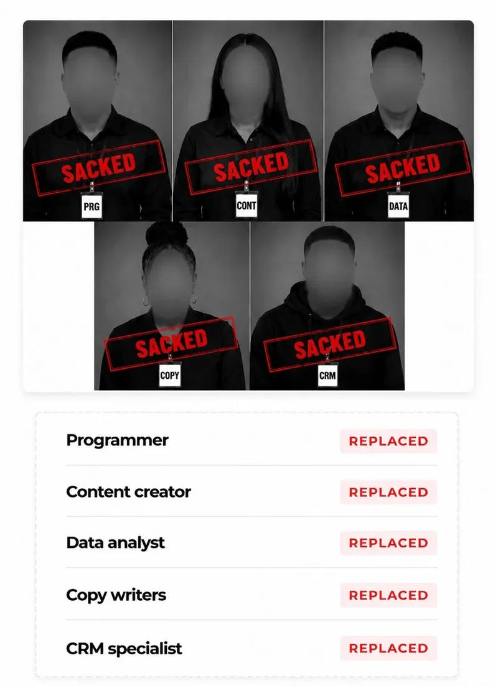

They laughed when I said I would build my own software until I made $1,000 with it.
- No developer.
- No agency.
- No coding experience
- just AI, the right prompts, and a step-by-step system that turned an idea into a real software product.
3 minutes. Watch before you join.
Join The Training NowWhat You'll Learn
-
How to build a professional, production-quality website with Claude AI with zero coding experience.
-
How to build a full automation system for business owners that cuts real operational costs.
-
How to build a saas product that solves a real business problem. Watch me live and I will show you how I built a saas product and sold one to a client in Jamaica for $1,000.
-
How to run high-converting Facebook, Instagram, and TikTok ads with AI without learning ads from scratch.
-
How to build agentic AI systems for yourself and for business-owner clients.
-
How to land high-paying clients on Upwork who will pay premium rates for these skills.
Who This Training Is For
Business owners looking for ways to reduce real operational cost through automation and systems.
Students & 9–5 workers looking for an extra income stream, but very honest with themselves that it takes real time, money, energy, and attention to build.
Freelancers looking for a high-demand skill that foreign clients will pay high rates for, specifically because most competitors in this space cannot build real software.
Tech & sales professionals who do not want to be sacked like these guys below because they allowed AI to replace them.

Who This Is Not For
- Anyone looking for a free YouTube-style course.
- Anyone waiting on a ponzi-style shortcut.
- Anyone who thinks AI-built work is inherently low quality.
- Anyone who believes they're above learning and implementing.
"The internet is full of noise, and it has made it hard to find genuine skills you can actually learn and see results from. As a business owner in Nigeria — one of Africa's most populous countries, where the cost of living keeps rising faster than most people's income. I know what that pressure feels like. If you're ready to change that — in your business and in your life — this is where you start."
Join Now Before You Continue